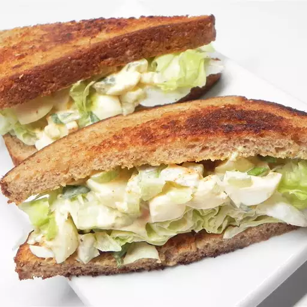

Pickled Egg Salad Sandwich

Description
This pickled egg salad sandwich is a zippy change from an ordinary egg salad sandwich.
Ingredients
- 2 pickled eggs, cut into small pieces
- 2 tablespoons light mayonnaise
- 1 tablespoon minced celery
- 1 garlic dill pickle, minced
- 2 teaspoons capers
- 2 teaspoons minced chives
- ½ teaspoon pickled egg juice
- 1 dash hot pepper sauce
- 2 slices whole wheat bread
- 1 teaspoon butter, or to taste
- 1 red lettuce leaf
- 1 tomato, thinly sliced
Steps
- Mix pickled eggs, mayonnaise, celery, dill pickle, capers, chives,
pickled egg juice, and hot pepper sauce together in a bowl.
- Toast bread lightly. Spread butter on one side of each slice.
Layer lettuce and tomato on one slice of bread, and spread egg salad on the other slice.
Press sandwich together and cut in half.